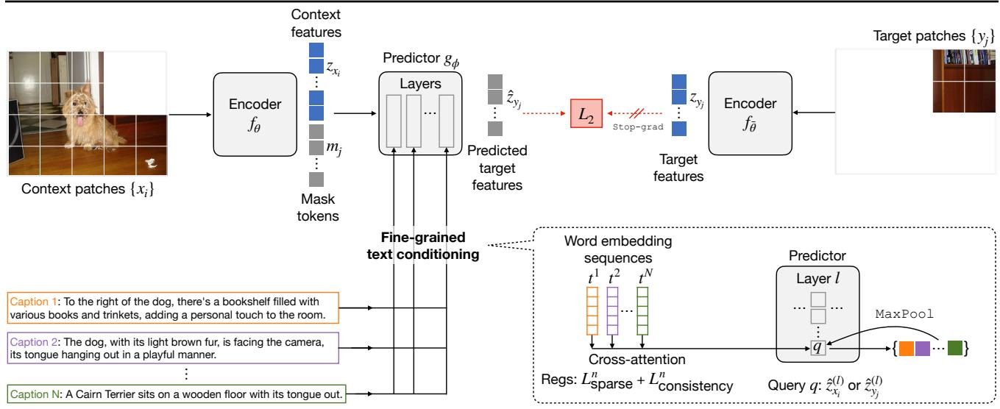
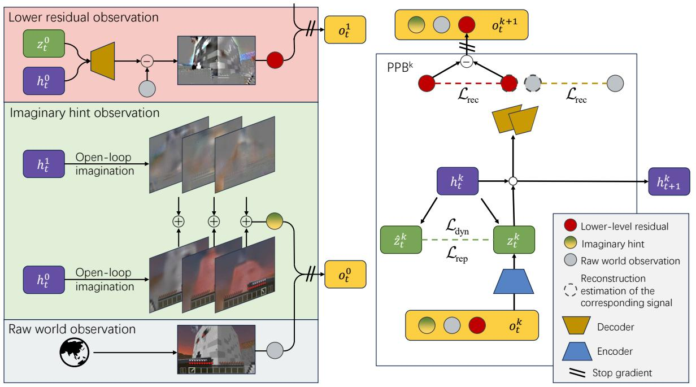
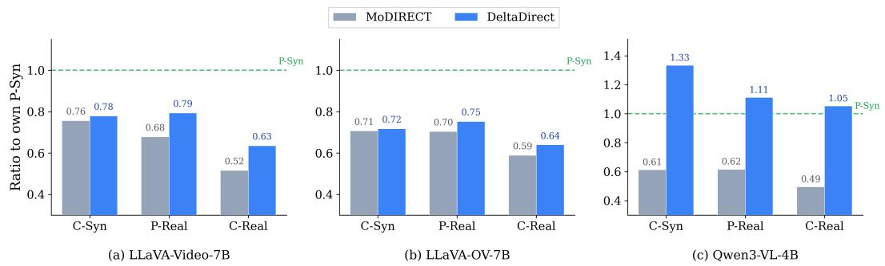

5 月 24 日：JEPA、世界模型与视频几何信号同时补强视觉表征
今天不是纯图像 SSL 单点爆发，而是文本条件 JEPA、层级世界模型、位姿 grounding 和运动方向诊断共同推高通用视觉表征的边界。
先读 TC-JEPA，它直接站在 I-JEPA/Masked feature prediction 主线上，核心问题是“遮挡位置预测不确定性如何靠文本条件缓解”。第二读 ResDreamer，关注层级残差世界模型如何在纯自监督条件下学习动态视觉推理 latent。然后读 Cambrian-P 和 Directional Motion Blindness：前者把相机位姿变成视频 MLLM 的基础监督信号，后者诊断运动方向信号在视觉编码器到语言读出之间如何断裂。SWEET、GeoWeaver 和 Matching Principle 更适合作为方法库：分别对应可缩放初始化、几何 token grounding 和鲁棒表征损失理论。
论文索引
| 优先级 | 论文 | 类型 | 相关性 | 一句话理由 |
|---|---|---|---|---|
| P1 | Text-Conditional JEPA for Learning Semantically Rich Visual Representations | arXiv + ICML 2026 | 高 | 在 I-JEPA masked feature prediction 中引入文本条件，是最直接的视觉自监督/视觉语言预训练工作。 |
| P1 | Self-supervised Hierarchical Visual Reasoning with World Model | arXiv + ICML 2026 | 高 | 纯自监督层级世界模型，用残差重构逼出更抽象的视觉推理表征。 |
| P1 | Cambrian-P: Pose-Grounded Video Understanding | arXiv 新增 | 高 | 用伪位姿/位姿回归约束视频 MLLM，直接强化跨帧空间表征。 |
| P2 | Self-Supervised Weight Templates for Scalable Vision Model Initialization | arXiv + ICML 2026 | 高 | 把自监督目标从激活表征扩展到可缩放视觉模型初始化权重模板。 |
| P2 | Which Way Did It Move? Directional Motion Blindness in Video-LLMs | arXiv 新增 | 中高 | 诊断运动方向信号在视觉编码器到语言读出之间的断裂，并提出 projector 级运动向量目标。 |
| P2 | GeoWeaver | arXiv 新增 | 中高 | 把冻结几何编码器的多层证据分配给视觉 token，强调几何先于语言推理。 |
| P3 | Swift Sampling | arXiv 新增 | 中 | 训练免费地在视觉 latent trajectory 中选高信息帧，可作为视频预训练/评测采样模块。 |
| P3 | The Matching Principle | arXiv 新增 | 中 | 从几何/协方差角度统一 nuisance-robust representation learning 的损失设计。 |
| 状态补录 | DINOv3 | TMLR Accepted / OpenReview | 高 | 不是今日新增，但属于通用视觉自监督基础模型的重要里程碑。 |
主线阅读

P1Text-Conditional JEPA for Learning Semantically Rich Visual Representations
视觉自监督和视觉语言预训练之间的边界被进一步打薄：它仍然预测 feature，不直接重建像素，也不完全依赖对比学习。
方法：caption-conditioned masked feature prediction with sparse cross-attention text conditioner

P1Self-supervised Hierarchical Visual Reasoning with World Model
它把视频 SSL 的目标从重建下一帧推向重建“低层没有解释完的部分”。
方法：hierarchical residual world model for self-supervised visual foresight
 P1
P1
Cambrian-P: Pose-Grounded Video Understanding
用伪位姿把跨帧 token 固定到共享空间，是视频 VFM/MLLM 很值得跟的结构化监督。
方法：learnable camera tokens + pose regression head for frame-level grounding

P2Which Way Did It Move? Directional Motion Blindness in Video-LLMs
这类诊断比单纯刷视频 QA 更有价值，因为它定位了视觉表征到语言读出的断点。
方法：feature-delta motion vector objective at projector level
 P2
P2
GeoWeaver: Grounding Visual Tokens with Geometric Evidence before Scene Reasoning
这篇不是 JEPA，而是 VLM 视觉 token grounding：冻结几何编码器的证据被分配给多层视觉 token。
方法：multi-level geometry bank + residual grounding before LLM reasoning